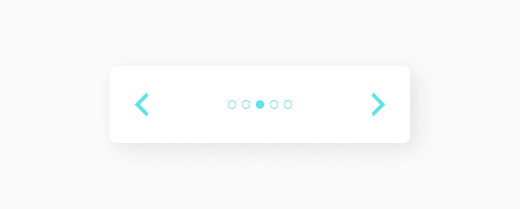

Slider
Слайдер — это анимированный элемент интерфейса, используемый для отображения видео и изображений на веб-сайте. Как и слайд-шоу, слайдеры изображений показывают по одному видео или изображению за раз. Содержимое меняется, когда пользователь нажимает на контроллеры, чтобы увидеть следующий слайд.
Структура компонента
Компонент состоит из фрейма, в котором будут отражаться нужные элементы, они в свою очередь объединены в группу rail, именно их пользователь и будет перелистывать, а также из контроллеров управления. В контроллеры входят кнопки и коллекция из meatball. Количество точек индикатора (meatball) равно количеству элементов в rail. Именно для этого и нужны meatballs, чтобы показывать на каком слайде находится пользователь и как много элементов находится в slider.
Slider Controllers
Slider Controllers это функциональный элемент индикации и переключения картинок или любой другой информации в слайдере. Подробнее про slider controllers.
Вот как выглядит слайдер у нас.
Состояние компонента
В основном видимое состояние меняется только у meatball, когда пользователь перелистывает слайды. Фон у meatball или закрашен или нет.
Реализация
Для начала в папке с компонентами создаём новую папку O_Slider, в неё кладём файлы jsx и css, в которых будем создавать и стилизовать компонент. Затем описываем функционал слайдера. Получаем следующий код.
import React, { PureComponent } from 'react'
import './O_Slider.scss'
import '../../quarks/Q_Icon.scss'
import M_SliderControllers from '../../molecules/M_SliderControllers/M_SliderControllers.jsx'
export default class O_Slider extends PureComponent {
constructor(props) {
super(props)
this.state = {
imageUrls: props.imageUrls,
activeIndex: 0
}
}
updateIndex = (newIndex) => {
if (newIndex < 0) {
newIndex = this.state.imageUrls.length - 1
} else if (newIndex >= this.state.imageUrls.length) {
newIndex = 0
}
this.setState((prevState) => ({
...prevState,
activeIndex: newIndex
}))
}
render() {
const { activeIndex, imageUrls } = this.state
return (
<div className="O_Slider">
<div className="W_SliderFrame">
<div className="C_SliderRail" style={{ transform: `translateX(-${activeIndex * 100}%)` }} >
{imageUrls.map((imageUrl) => (
<img key={imageUrl} className="Q_SliderImage" src={imageUrl} />
))}
</div>
</div>
<M_SliderControllers
imageUrls={imageUrls}
activeIndex={activeIndex}
handleChangeIndex={this.updateIndex}
/>
</div>
)
}
}Сами картинки мы не добавляем в проект, как например icon, для этого используем ссылки, их мы указываем в файле рендера компонента. Выглядит он у нас так.
import React from 'react'
import ReactDOM from 'react-dom'
import O_Slider from '../../components/organisms/O_Slider/O_Slider.jsx'
const imageUrls = [
'https://bipbap.ru/wp-content/uploads/2017/04/priroda_kartinki_foto_03.jpg',
'https://imgonline.com.ua/examples/bee-on-daisy.jpg',
'https://secretmag.ru/thumb/1200x0/filters:quality(75):no_upscale()/imgs/2021/11/02/12/4999384/d53776b3b010f6c92bdf3e0d7946b938aabd8c08.webp'
]
document.addEventListener('DOMContentLoaded', () => {
ReactDOM.render(<O_Slider imageUrls={imageUrls} />,
document.body)
})Затем прописываем стили для O_Slider.
.O_Slider {
margin: 10% auto;
position: relative;
width: 760px;
overflow: hidden;
display: flex;
flex-direction: column;
}
.O_Slider .W_SliderFrame {
width: 760px;
border-radius: 12px;
overflow: hidden;
transform: translate3d(0, 0, 0);
}
.O_Slider .C_SliderRail {
display: flex;
transition: transform 0.3s;
}
.O_Slider .Q_SliderImage {
width: 760px;
}Получаем следующий результат:
Составляющие
В этот компонент часто выводятся следующие компоненты.